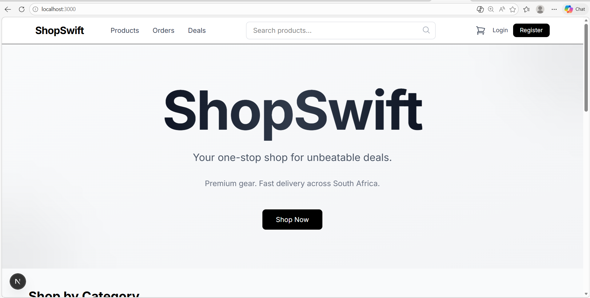
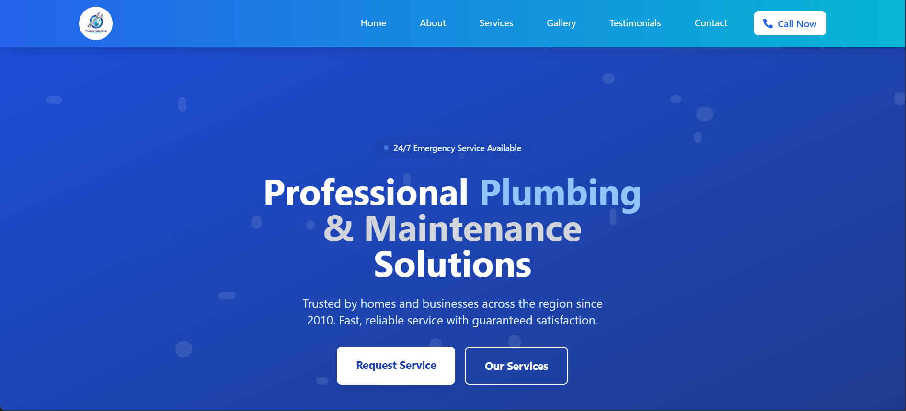
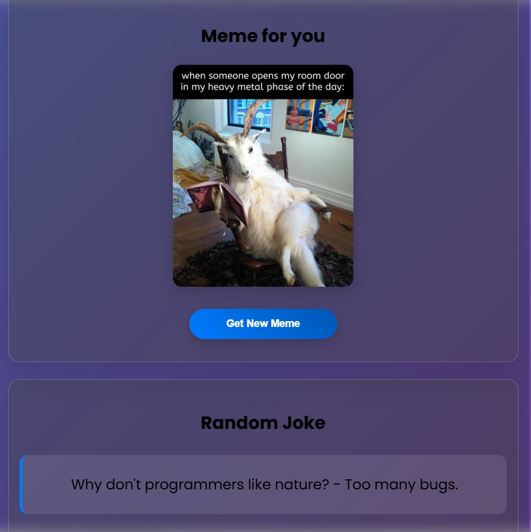
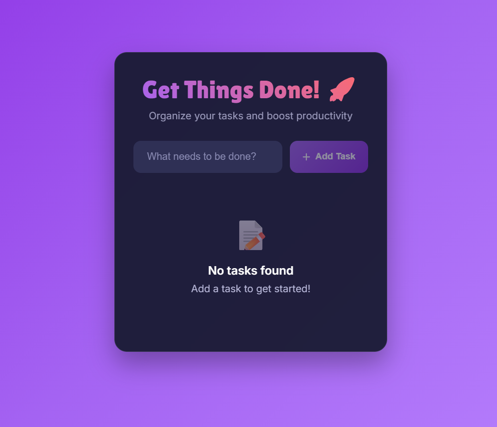
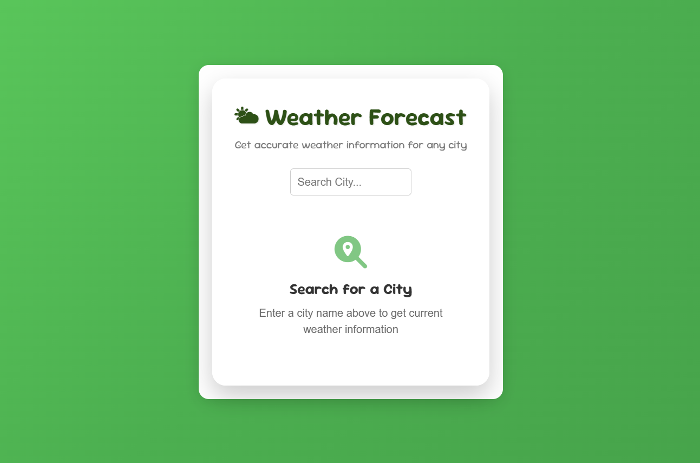

Team project
BenchmarkTrader
Full-stack trading platform built with the TERN stack, Prisma, and Supabase. Co-built a broker-client matching system and automated trade execution workflow.
ReactTypeScriptNode.jsSupabasePrisma
Junior Software Engineer / Junior Cloud Engineer
I build applications and the infrastructure they run on. Flask and Next.js on the application side, Terraform and AWS underneath it — wired together by a CI/CD pipeline I designed, broke, and fixed enough times to actually understand it.
$ build — compiling the background
University of Johannesburg. Algorithms, systems design, and software engineering fundamentals — the parts that don't show up in a demo but decide whether the demo keeps working a year later.
Led and contributed to team builds — BenchmarkTrader (trading platform) and WildGraph (conservation pathfinding) — where the hard part wasn't the code, it was agreeing on the architecture before writing it.
Took a Flask API from a local script to a production system on AWS — VPC, EC2, RDS, S3, IAM, Terraform-managed, deployed through GitHub Actions. Most of what I know about infrastructure came from reading my own error logs at 1am.
Currently job hunting for junior software engineering and cloud/DevOps roles across South Africa, while finishing the Kubernetes phase of my own infrastructure.
Computer Science & Informatics, University of Johannesburg
VPC, EC2, RDS, S3, ECR, IAM — provisioned with Terraform, not click-ops
GitHub Actions pipelines: test → build → push → deploy
Led collaborative builds across two academic and industry-style projects
$ config — environment variables
Grouped by what it's actually for, not how impressive it sounds.
$ deploy — release log

A production e-commerce platform built as both a real product and a deliberate infrastructure learning ground. Flask + PostgreSQL backend, Next.js 15 frontend, provisioned on AWS with Terraform and deployed through a GitHub Actions pipeline I wrote myself — currently extending into Kubernetes (k3s).
Full-stack trading platform built with the TERN stack, Prisma, and Supabase. Co-built a broker-client matching system and automated trade execution workflow.
Java application applying graph theory and pathfinding algorithms to identify critical wildlife protection corridors.

Business website for a plumbing service — responsive, service-area aware, built to establish a real online presence for a real client.

Meme generator with live API integration, random generation, and daily fresh content.

Todo application with local storage, categorization, and state management built to demonstrate clean React patterns.

Real-time forecasting app with location-based services and clean data visualization.
$ verify — credentials check
Security operations using Google Cloud security tools and the Chronicle platform for threat detection and response.
Foundations of security operations, threat intelligence, and incident response.
Practical incident-response simulation: ransomware investigation, documentation, and risk assessment.
$ connect — open a channel
Open to junior software engineering and cloud/DevOps roles across South Africa.